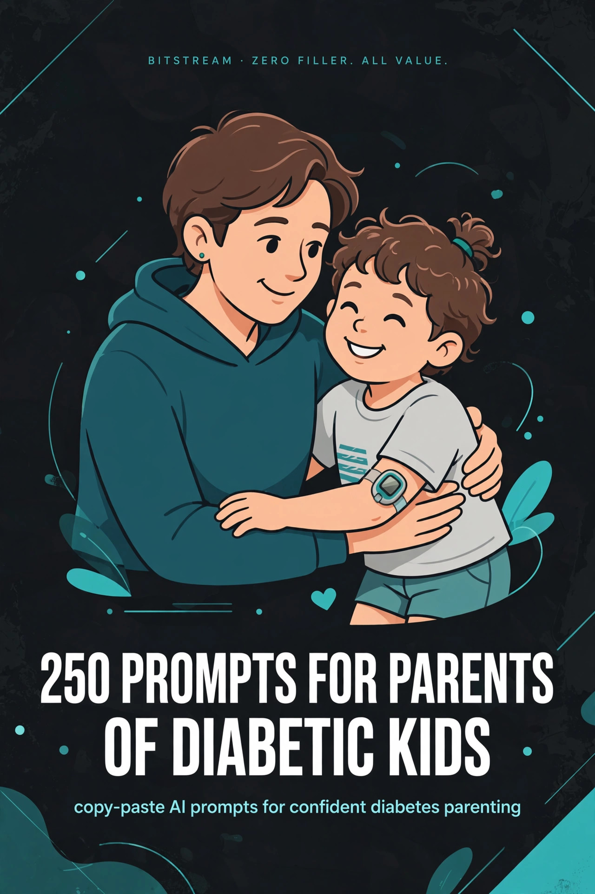

BITSTREAM · ZERO FILLER. ALL VALUE.
250 Prompts for Parents
of Diabetic Kids
copy-paste AI prompts for confident diabetes parenting.
Open a free AI tool, paste, fill in the blanks, done.
NICHE PACK · $10.99
How to use this pack (60 seconds)
- Open a free AI tool — ChatGPT (chatgpt.com), Claude (claude.ai), Gemini (gemini.google.com), or Meta AI. No paid plan needed.
- Copy any prompt and replace the [BRACKETED] parts with your child's details.
- Be specific. Your child's age, insulin type, school name, devices — specifics in, quality out.
- Treat the first answer as a draft. Reply with "make it shorter," "simpler words," or "one page" until it's right.
- Talk instead of typing. Every one of these tools has a voice mode — ramble while you walk, let it turn the ramble into clean text.
⚠ Important: AI is not a doctor. These prompts help you organize, track, plan, and communicate — they never replace medical judgment. Always verify anything medical with your child's diabetes care team (endocrinologist, diabetes educator, dietitian) before acting on it.
Rule 1 — Organize, don't diagnose. Use AI for logbooks, letters, checklists, and plans. Never ask it to decide insulin doses, correct a high or low, or give treatment advice.
Rule 2 — Confirm with the care team. Every medical-adjacent prompt in this pack ends with "confirm with our diabetes care team." That line is load-bearing. Keep it in.
Rule 3 — One win at a time. Diabetes parenting is a marathon of small tasks. Pick one prompt — the logbook, the 504 letter, the sleepover checklist — and get the win.
1 · Blood Sugar Tracking & Logbooks
Logbook templates, pattern-spotting, endo-visit summaries, and tracking routines that survive real life — plus versions your kid won't hate.
PROMPT 001
Daily logbook template
Design a daily blood-sugar logbook template for my [age]-year-old with type 1 diabetes. Columns: time, reading, carbs eaten, insulin given, activity, and a notes column. Keep it printable on one page and simple enough to fill in under a minute per entry.
PROMPT 002
Kid-friendly logbook design
Turn our diabetes logbook into something my [7]-year-old won't hate: a sticker-worthy weekly tracker, fun headers, and space to draw how they felt that day. It still needs to capture [time, reading, carbs, activity] for our endocrinologist.
PROMPT 003
Spot the patterns (observations only)
Here are two weeks of my child's blood sugar readings: [paste readings with times and notes]. Flag any patterns you see — like consistent morning highs or post-dinner spikes — as OBSERVATIONS ONLY. Do not suggest insulin changes; I'll review these with our endocrinologist.
PROMPT 004
One-page endo visit summary
Condense this month's logbook into a one-page summary for our endocrinologist visit: average readings by time of day, the biggest patterns, and 5 questions I should ask. Here's the log: [paste or summarize].
PROMPT 005
Tracking routine that sticks
Help me build a sustainable blood-sugar tracking routine for a [10]-year-old: school [8am–3pm], [soccer] practice [4–5pm]. When should we check, who logs it, and how do we keep each check under [5] minutes?
PROMPT 006
What actually matters
We're drowning in diabetes data. For a child with type 1 diabetes using [a CGM / finger sticks], tell me which [8–10] data points are actually worth logging daily, and which I can stop tracking without losing anything important. Organization only — no medical advice.
PROMPT 007
Time-in-range tracker
Build me a simple weekly tracker that calculates my child's time-in-range from daily readings. Our target range from our care team is [e.g., 70–180 mg/dL]. Show me how to log readings and compute the weekly percentage in [Google Sheets / on paper].
PROMPT 008
CGM export to talking points
I exported [two weeks] of CGM data from [Dexcom Clarity / LibreView]. Turn it into 6 plain-English talking points for our next endo visit: what improved, what got worse, and what's worth asking about. Do not suggest dose changes.
PROMPT 009
Weekend vs. weekday compare
Compare my child's weekend readings against weekday readings: [paste both sets]. Where do the patterns differ, and what 3 questions should I bring to our diabetes care team about the differences?
PROMPT 010
Overnight lows log
Create an overnight monitoring log for a child with type 1 diabetes: columns for check time, reading, action taken per our care plan, and follow-up reading. Add a morning summary section so I can spot how often lows happen between [midnight and 6am].
PROMPT 011
Growth-spurt flag system
My [9]-year-old seems to be in a growth spurt and readings are shifting. Build me a simple flag system: what to log, what to watch for over [2 weeks], and exactly what to report to our endocrinologist at our next visit.
PROMPT 012
New-diagnosis starter kit
My child was just diagnosed with type 1 diabetes at age [6]. Build me a first-week logbook starter kit: a simple daily sheet, a glossary of the 15 terms I'll hear most, and a checklist of questions for our first diabetes education appointment.
PROMPT 013
Make logging a game
Design a weekly diabetes-logging reward game for a [7]-year-old: points for on-time checks, streaks for full weeks, and a prize ladder I set. Keep the focus on the habit of logging, not on "good" or "bad" numbers.
PROMPT 014
Travel logbook
Make a simplified travel-day logbook template for a [10]-year-old with type 1 diabetes: just the essentials for [a 3-day trip], with space for time-zone changes and unusual meals. Fits on one page.
PROMPT 015
A1C appointment prep
Our A1C appointment is in [2 weeks]. From this logbook summary [paste it], draft 8 specific questions for our endocrinologist — about patterns, school-day management, and what to adjust. I will not act on anything until our care team confirms.
PROMPT 016
Caregiver reading report card
Design a simple daily report card a [grandparent / babysitter] can fill out after watching my [8]-year-old: readings, meals, activity, and "call mom/dad if" triggers. One page, big print, no jargon.
PROMPT 017
School nurse daily log sheet
Create a daily diabetes log sheet for our school nurse to fill out: pre-lunch reading, nurse-visit readings, carbs eaten, and notes. Include a "parent review" line at the bottom. For [child's name, grade, school].
PROMPT 018
Sports-day log
Build a sports-day log template: reading before practice, at halftime/break, and after — plus what was eaten and activity intensity. For [soccer, 90-minute practices, age 11].
PROMPT 019
Meal correlation journal
Here's [a month] of readings with meal notes: [paste]. Which meals or foods show up most often before highs or lows? List the top 5 correlations as observations for our dietitian — no dosing suggestions.
PROMPT 020
Pump site rotation log
Create an insulin pump site-rotation tracker: body map, date placed, date removed, and notes on absorption issues. For [Tandem / Omnipod / Medtronic] on a [9]-year-old. Tracking only — no medical advice.
PROMPT 021
Sleep vs. readings experiment
Help me track whether sleep quality affects my child's morning readings. Design a 2-week sheet: bedtime, wake time, sleep-quality rating, and morning reading. Then summarize any correlation as observations for our care team.
PROMPT 022
Feelings + numbers check-in
Make a weekly emotional check-in sheet that pairs with our logbook: how my child felt about diabetes this week, what frustrated them, and one win. For a [12]-year-old who is starting to feel burned out.
PROMPT 023
Supply inventory tracker
Build a diabetes supply inventory tracker: [test strips, CGM sensors, pump supplies, insulin, glucagon, ketone strips] — with "reorder at" thresholds and a monthly check routine so we never run out.
PROMPT 024
Monthly dashboard
Turn a month of logbook data into a one-page dashboard: average reading by time of day, time-in-range, lows count, and top 3 patterns. Format it so I can hand it to our endo team at a glance.
PROMPT 025
Paper-to-app migration plan
We're switching from a paper logbook to [mySugr / the Dexcom app / the Libre app]. Give me a 2-week migration plan: what to run in parallel, how to make sure nothing gets lost, and how to export a backup.
2 · Carb Counting & Meal Planning
Cheat sheets, meal plans, restaurant survival, and party food — carb planning only. Every prompt keeps dosing decisions with your care team, where they belong.
PROMPT 026
Personal carb-count cheat sheet
Build a carb-count cheat sheet of our family's 20 most-eaten foods, with serving sizes and carb grams. Kid: age [8]. This is for meal planning only — I confirm all dosing with our diabetes care team.
PROMPT 027
7-day dinner plan with carb counts
Plan 7 dinners for a family with a [9]-year-old with type 1 diabetes. Each dinner: main dish plus sides, total carb count per serving, prep under [30] minutes. Carb planning only — dosing confirmed with our care team.
PROMPT 028
Restaurant survival sheet
Make a one-page restaurant carb guide for the [6] places we eat most: [list restaurants]. Typical kid meals with estimated carb counts, plus exactly how to ask the server for nutrition info.
PROMPT 029
Birthday-party food game plan
Build a birthday-party food game plan for my [7]-year-old: how to estimate carbs for pizza, cake, and party snacks; what to bring as backup; and a before/during/after checklist. Carb planning only — I confirm dosing with our care team.
PROMPT 030
Label-reading lesson
Teach me to read nutrition labels for carb counting like a dietitian would: total carbs vs. net carbs, serving-size traps, and the 3 numbers that matter most. Use this real label as the example: [paste label].
PROMPT 031
Snack list by carb range
Give me 30 kid-approved snacks organized by carb range: under 15g, 15–30g, 30–45g. Include brand names where helpful, e.g. [Goldfish, apple slices, granola bars]. For school and home.
PROMPT 032
Lunchbox week with counts
Plan 5 no-reheat school lunches for a [9]-year-old with type 1 diabetes, each with a carb count and a backup plan if they don't finish everything. Under 10 minutes to pack.
PROMPT 033
Breakfast rotation
Give me 10 breakfasts my [6]-year-old will actually eat, each with carb counts and [5-minute] prep. Include 3 we can eat in the car on school mornings.
PROMPT 034
Picky-eater carb-consistent swaps
My [8]-year-old only eats [chicken nuggets, mac and cheese, pizza]. Give me carb-consistent swaps and variations so meals stay predictable — same carb ballpark, more variety. Planning only; dosing confirmed with our care team.
PROMPT 035
Fast-food carb guide
Make a fast-food carb reference for the [4] chains near us: [list them]. Kid-sized meals with carb counts, plus which menu items are hardest to estimate so I know when to ask for nutrition info.
PROMPT 036
High-carb meal framework
Build a planning framework for high-carb meals like [pizza night / pasta night]: how to break the meal into carb components, what to log, and what to discuss with our dietitian. No dosing advice — planning only.
PROMPT 037
Grandma's house cheat sheet
My mom watches my [7]-year-old twice a week. Make a carb cheat sheet for the [12] meals she cooks most — big print, serving sizes described simply. Planning only — dosing confirmed with our care team.
PROMPT 038
Grocery list by carb goal
Turn this week's meal plan into a grocery list organized by store section, with carb counts noted next to each item so I can spot the heavy hitters before I buy: [paste meal plan].
PROMPT 039
Free foods list
List 25 near-zero-carb foods and drinks my [10]-year-old can grab freely between meals: what counts as "free," portion limits to watch, and which ones travel well for school.
PROMPT 040
Holiday meal planner
Plan [Thanksgiving] dinner for our family including a [9]-year-old with type 1 diabetes: carb counts for each dish, a plate-building strategy, and what to tell relatives who push seconds. Planning only.
PROMPT 041
Slow-cooker week
Give me 5 slow-cooker dinners with carb counts per serving, [under $60] total groceries, feeding [a family of 4]. Bonus: which ones freeze well for sick days.
PROMPT 042
Carb-counting practice quiz
Quiz my [11]-year-old on estimating carbs: 10 rounds — show a food and portion, they guess the carbs, then reveal the answer with a tip. Encouraging, not test-like.
PROMPT 043
Balanced plate builder
Teach me the diabetes plate method for kids: how to build a plate with [protein, carbs, veg] that keeps my [8]-year-old full. Give me 7 example plates with carb counts.
PROMPT 044
Drinks carb chart
Compare the carb counts of the drinks my [9]-year-old encounters: [juice boxes, soda, sports drinks, chocolate milk, lemonade]. One-page chart with serving sizes — which ones are the sneaky ones?
PROMPT 045
Cereal aisle decoder
Rank [15] popular kids' cereals by carbs per serving and fiber, flag the ones with misleading serving sizes, and name 5 better breakfast swaps my [7]-year-old might accept.
PROMPT 046
Fruit carb pocket card
Make a pocket fruit carb reference: [20] common fruits with carb counts per typical kid portion [e.g., one small apple, half a banana]. Printable, fits in a lunchbox.
PROMPT 047
Kitchen-scale routine
Teach me a [5-minute] kitchen-scale routine for weighing the trickiest foods [pasta, rice, cereal]. Step-by-step for a busy parent, with the 10 foods most worth weighing.
PROMPT 048
Cafeteria menu planner
Here's next week's school cafeteria menu: [paste]. Plan which days my [10]-year-old should buy vs. pack, with estimated carb counts for the buy days and what to ask the cafeteria staff for.
PROMPT 049
Sunday meal-prep system
Design a [90-minute] Sunday meal-prep system for a family managing a child's carb counts: what to batch-cook, how to portion and label with carb counts, and what keeps [5] days.
PROMPT 050
Restaurant decision script
Write me a decision script for eating out with my [8]-year-old: what to check before we go, what to order first, how to estimate when there's no nutrition info, and what to log. Planning only.
3 · School Days & 504 Plans
504 language, teacher letters, nurse templates, and field-trip plans — everything that keeps your child safe and included at school.
PROMPT 051
504 plan draft language
Draft 504 Plan accommodation language for a [3rd-grader] with type 1 diabetes at [school name]: classroom blood-sugar checks, unrestricted bathroom and water access, nurse visits without penalty, and testing accommodations. Formal but parent-friendly — I'll review it with our care team and the school.
PROMPT 052
Teacher welcome letter
Write a warm first-week-of-school letter to my child's teacher introducing [name, age, grade]: what type 1 diabetes means day-to-day, what the teacher might notice, and the 5 most important things to know. One page.
PROMPT 053
School nurse intro email
Write an intro email to our new school nurse: my child's diabetes basics [CGM / pump / finger sticks], our care plan highlights, and how I prefer to communicate [text / email] during the school day.
PROMPT 054
Field-trip diabetes plan
Build a field-trip diabetes plan for a [4th-grader] going to [the zoo, 9am–2pm]: what supplies go in the chaperone's bag, check schedule, lunch carb plan, and an emergency script for the chaperone. I'll confirm details with our care team.
PROMPT 055
Substitute teacher info sheet
Create a one-page substitute-teacher info sheet: [child's name and a brief description], what diabetes looks like in class, where supplies are kept, and exactly what to do [and who to call] if something seems off. Big, calm, scannable.
PROMPT 056
Low episode classroom script
Write a step-by-step classroom script for a low blood sugar episode, based on OUR care plan [paste key steps]: what the teacher does first, what they say to the class, and when they call the nurse vs. 911. Calm, numbered steps.
PROMPT 057
High episode classroom script
Write a step-by-step classroom script for high blood sugar: what the teacher should do per our care plan [paste], what NOT to do, and when to send the student to the nurse. Must match our endocrinologist's guidance.
PROMPT 058
Classroom accommodations list
List 12 specific classroom accommodations for a [2nd-grader] with type 1 diabetes I can propose at our 504 meeting: seating, snack access, testing, PE, and field trips. Practical and school-realistic.
PROMPT 059
Test-day accommodations request
Draft testing accommodation requests for [state standardized assessments]: extra time for blood-sugar checks, permission to treat lows mid-test, and CGM/pump device allowances. Formal request language.
PROMPT 060
504 meeting prep
I'm walking into our first 504 eligibility meeting for my [kindergartner] with type 1 diabetes. Give me: my rights in plain English, 10 questions to ask, what documents to bring, and what to do if they push back.
PROMPT 061
Annual 504 review checklist
Build an annual 504 review checklist: what worked this year, what needs updating for [next grade], new accommodations to consider as my child gets older, and how to request the meeting in writing.
PROMPT 062
Principal intro email
Write a brief, professional email to the principal introducing our family and my [1st-grader]'s type 1 diabetes: what we need from the school this year and a request for a short meeting with the nurse and teacher.
PROMPT 063
Recess and playground plan
Design a recess diabetes plan for a [7]-year-old: who carries the fast-acting glucose, check-before-playground routine, and what the playground aide needs to know. Based on our care plan.
PROMPT 064
School bus plan
Write a school bus diabetes plan: a note for the bus driver about [child's name], signs to watch for, where the emergency supplies ride, and the driver's exact first step if something seems wrong.
PROMPT 065
After-school program handoff
Create an after-school program handoff sheet for [program name]: daily routine, supply location, snack plan, and emergency contacts. For staff who aren't medical professionals — keep it simple.
PROMPT 066
Drill and lockdown supply plan
Help me plan for fire drills and lockdowns with a [9]-year-old with type 1 diabetes: what goes in the emergency go-pouch, where it lives, and what to tell the teacher about drills. Aligned with our care plan.
PROMPT 067
Backpack emergency card
Design a wallet-sized emergency card for my child's backpack: name, condition, emergency contacts, "if low" / "if high" one-liners from our care plan, and our endocrinologist's number.
PROMPT 068
Explaining diabetes to classmates
Write a [5-minute] age-appropriate classroom talk for [2nd graders] explaining type 1 diabetes: what the devices are, why [name] sometimes eats in class, and how classmates can be good buddies. Warm, no scary details.
PROMPT 069
Teacher FAQ answers
Write answers to the 10 questions teachers always ask about a student with type 1 diabetes: "Is it contagious?" "Can they do PE?" "What if the device beeps?" — accurate, reassuring, one paragraph each.
PROMPT 070
Nurse log request template
Write a polite weekly email template asking the school nurse to share my child's daily diabetes log: readings, nurse visits, and any incidents. Friendly, appreciative, not demanding.
PROMPT 071
School supply stock list
List everything that should live in the school nurse's office for a [5th-grader] with type 1 diabetes: daily supplies, backup supplies, and emergency items — with a monthly restock checklist for me.
PROMPT 072
Absence note template
Write a school absence note template for diabetes-related absences [endo appointments, sick days, high/low recovery days]: professional, brief, and privacy-conscious — no more detail than the school needs.
PROMPT 073
Handling teasing about devices
My [10]-year-old is getting teased about [their CGM / pump]. Give me: a script for talking to my child, a script for emailing the teacher, and 3 confident one-liners my child can use. Kind but firm.
PROMPT 074
New school transition plan
We're switching schools mid-year. Build a [4-week] transition plan for a [4th-grader] with type 1 diabetes: records to transfer, who to meet in what order, and how to set up the 504 at the new school fast.
PROMPT 075
Summer camp medical plan
Draft a diabetes medical plan for [overnight camp, 1 week]: daily routine, supply quantities to pack, camp nurse communication template, and nighttime check plan. I'll confirm every detail with our care team.
4 · Sports, Playdates & Sleepovers
Coach letters, host info cards, packing lists, and overnight plans — so your kid says yes to everything childhood offers.
PROMPT 076
Coach intro letter
Write a season-start letter to my [11]-year-old's [soccer] coach: what type 1 diabetes means at practice, what the coach might see, and the 5 things that matter most. Confident tone — my kid is an athlete first.
PROMPT 077
Game-day packing list
Build a game-day diabetes packing list for [a full tournament day, 8am–4pm]: every supply, backup, snack, and document — organized as a check-off list I can reuse all season.
PROMPT 078
Practice-day routine
Design a practice-day routine for a [9]-year-old in [swim, 90-minute practices]: before-practice check, mid-practice plan, after-practice snack, and what to log. Aligned with our care plan — I'll confirm with our team.
PROMPT 079
Tournament weekend logistics
Plan diabetes logistics for a [2-day] tournament: supply quantities for [6 games], cooler packing, between-game routine, and a parent shift schedule so nothing gets missed. Confirm medical details with our care team.
PROMPT 080
Swim and beach day plan
Plan a pool/beach day for a [10]-year-old with [a CGM and pump]: device protection, check schedule around swimming, snack plan, and heat considerations. Based on our care plan.
PROMPT 081
Playdate host info card
Create a one-page playdate host info card: [child's name, age], the 3 things the host needs to know, where the supplies are, what a low looks like, and "call me if" triggers. Friendly, not frightening.
PROMPT 082
Playdate screening questions
Give me 8 natural questions to ask another parent before a first playdate with my [7]-year-old with type 1 diabetes: about supervision, food, activity plans, and emergency comfort — without sounding interrogative.
PROMPT 083
Sleepover packing checklist
Build a sleepover packing checklist for a [10]-year-old with type 1 diabetes: nighttime supplies, morning supplies, snacks, backup devices, and the note for the host parents. Overnight-specific.
PROMPT 084
Sleepover host letter
Write a warm letter to sleepover host parents: thank them, explain the nighttime routine in 5 simple steps, give them my number for ANY question, and make clear it's okay to call at 2am.
PROMPT 085
Sleepover night plan
Design an overnight diabetes plan for a sleepover: check schedule [e.g., bedtime, midnight, 3am], who does the checks, what the host does if numbers are off per our care plan, and the morning handoff.
PROMPT 086
High-energy venue plan
Plan a [trampoline park] outing for an [8]-year-old with type 1 diabetes: pre-activity routine, what to bring, how often to check during [2 hours] of bouncing, and recovery snacks. Per our care plan.
PROMPT 087
Party at a friend's house
Build a plan for my [9]-year-old attending a birthday party at a friend's house: what to send with them, what to tell the host, food strategy, and pickup-time check routine.
PROMPT 088
Away-game travel kit
List a complete away-game travel diabetes kit for [a weekend tournament, 2 nights]: supplies, backups of backups, snacks, cooling for insulin, and paperwork. Include quantities.
PROMPT 089
Explaining the pump to teammates
Write a [60-second] script my [11]-year-old can use to explain [their insulin pump / CGM] to curious teammates: confident, a little funny, shuts down weird questions kindly.
PROMPT 090
Coach quick-reference card
Design a wallet-sized quick-reference card for coaches: [child's name], what a low looks like, the coach's 3 steps, and emergency numbers. Fits on an index card.
PROMPT 091
Hot-weather activity plan
Plan for [summer football practice in the heat]: heat-plus-exercise considerations, hydration schedule, extra check timing, and supply storage in heat. Aligned with our care plan — confirm with our team.
PROMPT 092
Cold-weather activity plan
Plan a ski/snow day for a [12]-year-old with type 1 diabetes: keeping insulin and devices warm, check schedule in the cold, pocket snacks, and lodge warm-up routine.
PROMPT 093
Trying a new sport
My [8]-year-old wants to try [karate]. Build a new-sport onboarding checklist: what to tell the instructor, a first-month observation log, and questions for our care team before starting.
PROMPT 094
Post-game log template
Create a post-game log template: activity type and intensity, readings before/during/after, food eaten, and how the night went. Designed to reveal patterns over a season.
PROMPT 095
Playdate snack stash
Build a grab-and-go playdate snack stash: [10] pre-portioned, labeled snacks with carb counts that I can hand to any host parent with zero explanation needed.
PROMPT 096
Sleepover morning handoff
Write a morning-after-sleepover handoff routine: what to ask the host, what to check when [child] gets home, and a thank-you text template for the host parents.
PROMPT 097
Note for referees and officials
Write a brief note for referees/umpires: my [10]-year-old may need to [check a device / eat on the sideline / step out briefly] during games — medical necessity, won't disrupt play. Polite and official.
PROMPT 098
Sports physical prep
Our sports physical is next week. Draft 8 diabetes-specific questions for the doctor about [soccer season]: activity guidelines, what to watch for, and any forms the league needs signed.
PROMPT 099
Team snack table plan
The team snack table is a minefield. Build a plan: what to contribute, how to handle the post-game treat tradition, and a script for my [7]-year-old to navigate it confidently.
PROMPT 100
Coach thank-you note
Write an end-of-season thank-you note to a coach who handled my child's diabetes brilliantly: specific, warm, and the kind of note that makes them do it again for the next kid.
5 · Sick-Day Management
Checklists, decision aids, and tracking sheets for illness days — with "confirm with our diabetes care team" baked into every medical-adjacent prompt.
PROMPT 101
Sick-day kit checklist
List everything for a diabetes sick-day kit to keep ready year-round: supplies, medications our care team has approved, easy foods, and documents — with a twice-yearly restock reminder.
PROMPT 102
Sick-day action checklist
Build a step-by-step sick-day checklist for a [9]-year-old with type 1 diabetes: check schedule, what to log, hydration, rest, and "call the doctor now" triggers. Based on general sick-day principles — I'll confirm every step with our diabetes care team.
PROMPT 103
When-to-call-the-doctor decision aid
Create a "when to call" decision aid for sick days: green/yellow/red zones with specific triggers [vomiting, ketones, fever thresholds from our care plan], who to call in each zone, and what info to have ready. Confirm thresholds with our care team.
PROMPT 104
Illness symptom + reading tracker
Design a sick-day tracker that combines symptoms and readings: temperature, symptoms, blood sugar, ketones, fluids, and meds given — one page per day, easy to read over the phone to our nurse line.
PROMPT 105
Sick-day pharmacy run list
Build a sick-day pharmacy list template: what to ask the pharmacist about [OTC meds and diabetes], prescription refills to check, and which common cold medicines hide sugar or affect readings — confirm all choices with our care team and pharmacist.
PROMPT 106
Ketone-check routine
Design a ketone-checking routine for sick days: when to check per our care plan, how to log results alongside readings, and what results mean for "call the doctor" decisions. Tracking only — treatment decisions stay with our care team.
PROMPT 107
Sick-day hydration plan
Build a sick-day hydration plan for a [7]-year-old: fluid goals by hour, which drinks and their carb counts, what to do if they won't drink, and when poor hydration becomes a call-the-doctor trigger. Confirm with our care team.
PROMPT 108
Sick-day school email
Write a school absence email for a diabetes sick day: what's happening, expected absence length, what I need from the teacher [missed work], and who to contact. Brief and professional.
PROMPT 109
Sick-day meals with carb counts
Give me 12 easy-on-the-stomach sick-day foods with carb counts for a [9]-year-old: what to offer, portion guidance, and how to handle "won't eat anything" days. Meal planning only — dosing confirmed with our care team.
PROMPT 110
Vomiting episode plan
Build a vomiting-episode tracking plan: what to log each episode, hydration attempts, check schedule, and the exact triggers for calling our care team or going to urgent care. Confirm with our care team.
PROMPT 111
Fever + readings log
Design a combined fever-and-blood-sugar log: temperature, reading, ketones, fluids, and meds — with space for [3 days]. Made to hand to the pediatrician or read over the phone.
PROMPT 112
Caregiver sick-day handoff
Write sick-day instructions for [grandma] watching my sick [6]-year-old: the day's schedule, what to track, what NOT to decide on her own, and "call me immediately if" triggers. Crystal clear.
PROMPT 113
ER go-bag checklist
List a diabetes ER go-bag: supplies, current medication list template, insurance cards, comfort items for an [8]-year-old, and a one-page medical summary for the ER team. Pack once, update quarterly.
PROMPT 114
After-hours nurse line script
Write a script for calling the after-hours diabetes nurse line: the 10 facts to have ready, how to describe symptoms clearly, and what questions to ask before hanging up.
PROMPT 115
Post-illness restock checklist
After a sick week, build a restock checklist: which supplies got used up, what to reorder, what expired, and what to add to the kit that we wished we'd had.
PROMPT 116
Recovery-day plan
Design a recovery-day plan for the day after a stomach bug: easing back into normal meals with carb counts, activity limits, what to keep logging, and when school is okay again. Confirm with our care team.
PROMPT 117
Questions for the endo after illness
After a rough sick week, draft 10 questions for our endocrinologist: what happened, what to do differently next time, and whether our sick-day plan needs updating. Bring the illness tracker.
PROMPT 118
Cold and flu season prep
Build a fall cold-and-flu-season prep checklist for a family managing type 1 diabetes: supplies to stock, vaccines to discuss with our pediatrician, school communication, and the sick-day plan refresh.
PROMPT 119
Stomach-bug decision aid
Create a stomach-bug-specific decision aid: hydration targets for a [35-lb] child, what to track hourly, and red-flag triggers for calling our care team. General guidance only — confirm with our care team.
PROMPT 120
Illness + antibiotics tracking
My [9]-year-old is on antibiotics for [an ear infection]. Build a tracking plan: what to watch since illness and meds can shift readings, what to log, and what to report to our care team. No dosing changes without them.
PROMPT 121
Allergy season plan
Design a spring allergy-season plan: tracking symptoms alongside readings, questions about [antihistamines] for our pharmacist and care team, and how to tell allergies from a cold in the log.
PROMPT 122
Sick-day carb chart
Make a one-page carb chart of sick-day staples: [crackers, broth, ginger ale, popsicles, applesauce, toast] with carb counts per serving — fridge-worthy for the next illness.
PROMPT 123
School nurse update during illness
Write a template for updating the school nurse during a multi-day illness: daily status, expected return, what the nurse should tell the teacher, and doctor's note logistics.
PROMPT 124
Sibling care plan
Build a sibling care plan for sick days and ER trips: who watches [siblings' ages], their routines, packed bags, and how to explain what's happening in age-appropriate words.
PROMPT 125
Post-illness debrief
After recovery, turn the illness tracker into a debrief: what worked, what didn't, 3 updates for our sick-day plan, and questions for our next endo visit. File it with the logbook.
6 · Questions for the Diabetes Care Team
Walk into every appointment prepared — question lists, one-page briefs, and follow-ups that make each visit count. These prompts organize your thinking; the medical answers always come from your care team.
PROMPT 126
Appointment question list builder
I'm taking my [age]-year-old to the endocrinologist on [date]. Help me write a list of questions about [topic: e.g., overnight patterns, growth, sports]. Organize them by priority — the 5 I must ask first — and keep each question short enough to read aloud.
PROMPT 127
One-page appointment brief
Turn these notes into a one-page brief I can hand the doctor at our appointment: [paste readings, concerns, and changes since last visit]. Format: top 3 concerns, key data, questions. Organized facts only — no medical interpretation.
PROMPT 128
Between-visit question capture
Here's my running list of things I want to ask the diabetes team: [paste messy list]. Sort them into: ask at the next visit, ask the nurse line now, and look up myself. Keep each one as a clear single question.
PROMPT 129
A1C appointment prep
Our next appointment will cover my child's A1C result. Help me write questions I should ask the endocrinologist about what the number means for a [age]-year-old, what affects it, and what to discuss. Do not interpret the result — I'll confirm everything with our care team.
PROMPT 130
Complication screening questions
Help me prepare questions for the endocrinologist about complication screenings for a [age]-year-old with type 1 diabetes — eyes, kidneys, thyroid, celiac. What should I ask about when screenings start and how often they happen?
PROMPT 131
New school year question list
Help me write questions for our diabetes educator about the new school year ([grade level]): 504 plan updates, nurse coverage, field trips, and PE. Organize as a checklist I can work through at the appointment.
PROMPT 132
Growth and puberty questions
My child is [age] and [entering puberty / growing fast]. Help me write questions for the endocrinologist about how growth and hormones affect diabetes management, and what patterns to watch for. All medical guidance to be confirmed with our care team.
PROMPT 133
Pump or CGM start: appointment questions
We're discussing starting a [CGM / insulin pump] for my [age]-year-old. Help me write questions for the appointment: training, what the first month looks like, who to call with problems, and costs. Questions only — do not recommend a device.
PROMPT 134
Sports participation questions
My [age]-year-old wants to play [sport]. Help me write questions for the diabetes care team about sports participation — practices, games, tournaments, and coach communication. All medical guidance to be confirmed with our care team.
PROMPT 135
Sick-day plan review questions
Help me prepare questions to review our sick-day plan with the diabetes educator: when to call, what supplies to keep on hand, and ketone-checking routines. I want a written plan from the care team — not advice from AI.
PROMPT 136
Insurance denial: question prep
Our insurance denied [supplies / device]. Help me write questions for the care team about the appeal process: what documentation they can provide, alternatives to ask about, and timelines. Include a checklist of what to ask the insurer too.
PROMPT 137
Second-opinion prep packet
We're considering a second opinion about [topic]. Help me organize a packet: summary of my child's history, current plan, and the specific questions we want a fresh perspective on. Keep it factual and neutral.
PROMPT 138
Lab results: questions to ask
My child's labs show [paste results or describe]. Help me write questions to ask the endocrinologist about these results — what each test checks and what to discuss. Do not interpret the results for me.
PROMPT 139
Telehealth visit prep
We have a telehealth visit with the diabetes team on [date]. Help me prepare: what data to have ready, how to organize my questions, and what to test beforehand (camera, uploads, logins).
PROMPT 140
Annual comprehensive visit checklist
Build me a checklist for my child's annual comprehensive diabetes visit: records to bring, data to upload, questions organized by topic, and follow-ups to schedule (eye exam, dentist, labs).
PROMPT 141
Care-team role map
Help me make a "who does what" reference for my child's diabetes care team: endocrinologist, educator, dietitian, nurse line, after-hours line. For these [10 common situations: e.g., pump alarm at midnight, prescription refill, school form], tell me who to contact first.
PROMPT 142
Post-appointment follow-up email
Write a follow-up email to our diabetes educator after today's appointment. Key points I want to confirm: [list]. Ask them to correct anything I misunderstood. Short and clear.
PROMPT 143
"The numbers don't make sense" brief
My child's readings have been [describe pattern, e.g., high every afternoon for a week] and I don't know why. Help me write clear questions plus an organized data summary for the care team — facts only, no diagnosis or dosing suggestions.
PROMPT 144
Mental health screening prep
I want to ask the diabetes team about my child's emotional health at our next visit. Help me write questions about screening for diabetes distress, anxiety, and burnout in kids — and how to bring it up without my child shutting down.
PROMPT 145
Transition to adult care (teens)
My teen is [16/17] and will eventually move to adult diabetes care. Help me write questions for our current team: when to start the transition, what my teen needs to learn first, and how to find an adult endocrinologist.
PROMPT 146
Dental and eye care coordination
Help me write questions about coordinating dental and eye care with diabetes: what to tell the dentist and eye doctor, how often to go, and what information to share between providers.
PROMPT 147
Dietitian session question prep
We have a session with the dietitian about [topic: e.g., carb counting, picky eating, school lunches]. Help me write questions and list what to bring (food logs, favorite meals, labels).
PROMPT 148
Vaccine question list
Help me write questions for the care team about vaccines for my [age]-year-old with diabetes: which are recommended, timing around illness, and what to ask the pediatrician vs. the endocrinologist.
PROMPT 149
What changed since last visit
Since our last appointment, these things changed: [list: new routines, illnesses, school changes, growth spurts]. Turn this into a clear summary with dates that I can hand to our care team.
PROMPT 150
Emergency plan review questions
Help me prepare questions to review our emergency action plan with the care team: glucagon training refreshers, when to go to the ER, school emergency plans, and who needs a copy. I want the official plan from our care team.
7 · Travel With Diabetes Supplies
Double the supplies, halve the stress — packing checklists, TSA letters, time-zone worksheets, and emergency plans for trips near and far.
PROMPT 151
Double-supplies packing checklist
We're traveling for [X days] to [destination]. Build a diabetes packing checklist with DOUBLE the supplies we'd normally need: insulin, pump supplies or syringes, CGM sensors, test strips, ketone strips, glucagon, fast-acting glucose. Organized by bag: carry-on vs. checked.
PROMPT 152
TSA medical letter template
Write a TSA/airport security letter template for my [age]-year-old with type 1 diabetes. Include: diagnosis, list of medical devices and supplies, request to keep insulin and devices with us at all times, and a line for our doctor's signature and contact info.
PROMPT 153
Airport security script
Write me a short, calm script for getting through airport security with my child's diabetes supplies: what to say to TSA, what stays in the bag, what to declare. For [domestic / international] travel. Confident wording I can rehearse.
PROMPT 154
Insulin stays in the carry-on
Make a packing plan that keeps ALL insulin and diabetes supplies in our carry-on for a flight to [destination]. Include cooling case tips, what to do if a bag gets gate-checked, and a backup plan. Build the whole plan around one rule: insulin never goes in checked luggage.
PROMPT 155
Time-zone travel worksheet
We're traveling from [home time zone] to [destination time zone] — a [X]-hour difference — for [X days]. Build me a planning worksheet: flight times, first-day schedule, and the exact questions to ask our endocrinologist about timing. Remind me clearly: all schedule changes must be confirmed with our diabetes care team before the trip.
PROMPT 156
Hotel fridge request email
Write an email to [hotel name] requesting a mini-fridge for medical storage (insulin) for our stay [dates]. Polite and brief, mentions it's medically necessary, asks about fees and written confirmation.
PROMPT 157
Emergency plan abroad
Build an emergency plan for [country] travel with my diabetic [age]-year-old: how to say "my child has type 1 diabetes" in [language], nearest hospital and pharmacy to our [hotel/address], what to pack for emergencies, and who to call. Include a print-and-carry emergency card.
PROMPT 158
Cruise prep checklist
We're taking a [X]-day cruise to [destinations]. Build a diabetes prep checklist: supplies for the full trip plus extras, medical letter for boarding, cabin fridge request, shore-excursion day packs, and what to do if we need medical care on board.
PROMPT 159
Road trip diabetes kit
Plan a diabetes kit for a [X]-hour road trip to [destination]: what goes in the front-seat bag vs. the trunk, cooler setup for insulin, rest-stop planning, and an overnight emergency bag in case we get stranded.
PROMPT 160
Camp packing + nurse letter
My [age]-year-old is going to [diabetes camp / regular camp] for [X days]. Build a packing checklist and draft a letter to the camp nurse covering: devices, daily routines, emergency contacts, and what the camp needs from us. All medical details to be confirmed with our care team.
PROMPT 161
Field trip day-pack
My child's class is going to [place] for the day. Build a day-pack checklist and a one-page note for the chaperone: what's in the bag, when to check in with my child, and exactly when to call me.
PROMPT 162
Sleepover kit + host-parent note
My [age]-year-old is sleeping over at a friend's house. Build a packing checklist and write a friendly note for the host parents: the basics they need to know, what's in the kit, and when to call us. Reassuring, not scary.
PROMPT 163
Grandparents' house setup
Build a checklist for setting up my parents' house for diabetes care: supplies to keep there, a simple routine card for the fridge, emergency numbers, and what to teach them vs. what we'll handle ourselves.
PROMPT 164
Theme park day logistics
We're spending a full day at [theme park] with my [age]-year-old. Plan the diabetes logistics: what to pack, locker vs. backpack strategy, device considerations on rides, meal and snack timing, and a mid-day check-in plan. Confirm any activity guidance with our care team.
PROMPT 165
Beach and pool day plan
Plan a beach day with diabetes supplies for my [age]-year-old: waterproof storage, heat protection for insulin and devices, what to bring, and a shade-and-rest plan. Note: confirm heat and water guidance for our specific devices with our care team.
PROMPT 166
Translate key diabetes phrases
Translate these diabetes emergency phrases into [language] for our trip to [country]: "My child has type 1 diabetes." "We need juice or sugar fast." "Where is the nearest hospital?" "Where is the nearest pharmacy?" "This is insulin — it must stay cold." Print-ready card format.
PROMPT 167
Lost supplies replacement plan
Build a plan for replacing lost or damaged diabetes supplies while traveling in [destination]: what to pack as backup, how to find a pharmacy, what documents to carry (prescriptions, doctor's letter), and travel insurance steps.
PROMPT 168
Hurricane and power-outage kit
Build a hurricane/power-outage emergency kit for my diabetic child in [Florida]: how to keep insulin cool without power for [X days], backup supplies, printed emergency contacts, and an evacuation packing list.
PROMPT 169
Travel insurance questions
Help me write questions to ask a travel insurance provider about my diabetic child's needs: medical evacuation, pre-existing condition clauses, supply replacement abroad, and what documentation they require.
PROMPT 170
Flight food logistics
We're flying [route, X hours] with a [age]-year-old with diabetes. Plan the food logistics: snacks to pack, what to buy after security, timing around the flight, and food options at [layover airport]. Confirm meal-timing questions with our care team.
PROMPT 171
Travel-day timeline
Build a travel-day timeline for [date]: wake-up, supply check, airport arrival, security, flight, arrival. Include diabetes checkpoints — supply verification and check-ins with [caregiver] — at each stage.
PROMPT 172
Backup pharmacy plan
We're staying in [city] for [X days]. Build a plan for finding a backup pharmacy near our [hotel/address]: what to search, what to ask when I call, and what documents to bring in case we need an emergency fill.
PROMPT 173
Pump vs. injections: travel worksheet
We use [an insulin pump / multiple daily injections]. Build a travel considerations worksheet for our trip to [destination]: method-specific pros and cons for this trip, backup supplies for our method, and questions to ask our diabetes educator. Planning only — no dosing advice.
PROMPT 174
Travel log template
Make a simple travel log template I can fill in during our trip to [destination]: daily routine notes, time-zone changes, supply use, and anything unusual — formatted so I can hand it to our care team at the next visit.
PROMPT 175
Post-trip restock checklist
We just got back from [X days] in [destination]. Build a restock checklist: count what's left, flag what expired in the heat, what to reorder, and what to replace before the next trip.
8 · Emotional Support for Your Kid
Scripts and strategies for the emotional side — age-appropriate explanations, "why me" moments, siblings, and raising a kid who's confident, not defined by diabetes.
PROMPT 176
Explain diabetes to a 5-year-old
Write a gentle, simple explanation of type 1 diabetes for my 5-year-old: what it is, why they need [shots / a pump / finger checks], and that it's nobody's fault. Warm tone, under 150 words, no scary words.
PROMPT 177
Explain diabetes to a 10-year-old
Write an honest, age-appropriate explanation of type 1 diabetes for my 10-year-old: what the pancreas does, what insulin does, why we check numbers. Encourage questions. Straightforward, not babyish.
PROMPT 178
Explain diabetes to a teenager
Write a real-talk explanation of type 1 diabetes for my [13]-year-old: the science in plain language, why management matters long-term, and that it's okay to be angry about it. Respect their intelligence.
PROMPT 179
The "why me" moment
My [age]-year-old just asked "why me?" about diabetes. Give me 3 ways to respond: one short and comforting for the moment, one deeper conversation for later, and what NOT to say.
PROMPT 180
Feeling different at school
My [age]-year-old feels different from classmates because of diabetes. Write me a conversation script: how to open it, how to validate what they feel, 3 confidence-building reframes, and one action we take together afterward.
PROMPT 181
Building confidence this month
Give me 10 small, specific ways to build my diabetic [age]-year-old's confidence this month — things they can own, master, or teach others. Practical actions, not platitudes.
PROMPT 182
Talking to siblings about diabetes
Write a script for explaining my [age]-year-old's diabetes to their [younger/older] sibling (age [X]): what's happening, why [name] gets extra attention sometimes, and what their role is. Honest and age-appropriate.
PROMPT 183
Sibling jealousy: fair vs. equal
My non-diabetic child is jealous of the attention diabetes gets. Give me a plan: how to talk about fair vs. equal, 5 one-on-one ideas for them, and language for when they say "it's not fair."
PROMPT 184
Kid's script for curious friends
Write a short, confident explanation my [age]-year-old can use when friends ask about their [CGM/pump]: 2–3 sentences, cool tone, shuts down weird questions without oversharing.
PROMPT 185
Handling teasing or bullying
My child is being teased about their diabetes: [describe situation]. Give me: what to say to my child tonight, how to role-play responses together, and when and how to involve the teacher. Include 3 comebacks that are confident, not cruel.
PROMPT 186
Sleepover anxiety conversation
My [age]-year-old wants sleepovers but is anxious about diabetes. Write a conversation guide: naming the worry, problem-solving it together, and a practice plan starting with a trusted house.
PROMPT 187
Telling the coach together
Help me and my [age]-year-old plan telling their [sport] coach about diabetes: what to say, what the coach needs to know vs. what's private, and a one-page info sheet we can hand over.
PROMPT 188
Kid diabetes burnout: conversation starters
My [age]-year-old is showing signs of diabetes burnout: [describe]. Help me understand what's happening emotionally and give me conversation starters — not lectures — to open up about it. Include signs it's time to loop in our care team.
PROMPT 189
Celebrating diabetes wins
Give me 15 ways to celebrate diabetes wins with my [age]-year-old — from "first solo sensor change" to "handled a tough week." Mix tiny daily wins and big milestones. No food rewards tied to numbers.
PROMPT 190
Normalizing the devices
My [age]-year-old is embarrassed by their [CGM/pump]. Give me strategies to normalize it: language we use at home, letting them decorate it, cool examples, and how I model confidence about it.
PROMPT 191
Coping with hospital visits
My child gets anxious about [endo appointments / hospital visits]. Write a prep routine: what to tell them beforehand, what to bring for comfort, and a calm-down plan for the waiting room.
PROMPT 192
Journal prompts for kids
Write 12 journal prompts for my [age]-year-old with diabetes: some about feelings, some about wins, some just fun. Age-appropriate, with no pressure to write about diabetes every time.
PROMPT 193
Role-play: answering curious questions
Give me 8 role-play scenarios to practice with my [age]-year-old: curious questions classmates ask about diabetes. For each: the question, a confident answer, and a follow-up line if they keep pushing.
PROMPT 194
Finding diabetic peers
Help me write a post to find local diabetes parent groups and kid meetups near [city]: what to include, where to post it (Facebook, JDRF chapter, hospital bulletin), and safety tips for meeting new families.
PROMPT 195
Grandparents who sneak treats
My [parent/in-law] sneaks treats to my diabetic child. Write a loving but firm boundary script: why it matters, what they CAN do instead to spoil the grandkids, and how to handle it if it happens again.
PROMPT 196
Babysitter info my kid can hear
Write a kid-friendly version of our diabetes info for the babysitter to read WITH my [age]-year-old: what's normal, what's the plan, and reassurance for my child that "I've got this and the sitter's got this."
PROMPT 197
Diabetes as part of their story
Help me frame diabetes as part of my [age]-year-old's story in a positive way: language to use at home, strengths it builds, and how to answer "what's wrong with you?" with pride instead of shame.
PROMPT 198
"I'm tired of diabetes"
My [age]-year-old said "I'm tired of diabetes." Give me a response plan: validate first, practical relief we can offer (dropping one task for a week, a fun distraction), and signs it's time to loop in our care team.
PROMPT 199
Kid FAQ cheat sheet
Make a one-page FAQ my [age]-year-old can keep: answers to the 10 questions kids always ask about diabetes, written in their voice — short, confident, and theirs to use or ignore.
PROMPT 200
Wants to quit the device
My [age]-year-old wants to stop wearing their [CGM/pump]. Help me have the conversation: listen first, find the real reason, problem-solve together, and figure out what to ask our care team about alternatives. No forcing, no guilt.
9 · Parent Burnout & Self-Care
You can't pour from an empty cup — night-shift sleep plans, sharing the load, asking for help, and finding your people.
PROMPT 201
Night-shift sleep strategy
I do overnight diabetes checks and I'm exhausted. Build a sleep strategy: shift planning with [partner], nap windows, what to prep before bed to minimize wake-ups, and how to protect one full night of sleep per week.
PROMPT 202
Alarm fatigue action plan
We're getting [X] CGM alarms a night and nobody sleeps. Build an action plan: how to organize alarm response, what to discuss with our care team about alert settings (their decision, not AI's), and a rotation so one parent isn't always on duty.
PROMPT 203
Dividing diabetes duties fairly
Help me and my partner divide diabetes tasks fairly. List every recurring task — night checks, supply orders, school communication, appointments, pharmacy runs — assign owners, and build a weekly handoff check-in. Include the invisible mental-load tasks too.
PROMPT 204
Weekly partner check-in
Write 10 check-in questions for my partner and me about sharing diabetes care: what's working, what's draining, what we each need more or less of. Designed for a 20-minute weekly conversation.
PROMPT 205
Asking family for help: scripts
Write scripts for asking [grandparent / sibling / friend] for specific diabetes help: overnight babysitting, school pickup with diabetes knowledge, supply runs. Make each ask concrete — people say yes to specific requests, not vague ones.
PROMPT 206
Training a backup caregiver
Build a training plan for [grandparent/babysitter] to cover diabetes care for [a weekend]: what to teach in what order, a printed cheat sheet, practice runs, and how I'll know they're ready. All medical training content to be confirmed with our diabetes educator.
PROMPT 207
Weekly stress tracker
Make a simple weekly stress tracker for me as a diabetes parent: 5 check-in questions, a 1–10 scale, and what my scores mean for action. Include a clear flag for when it's time to ask for help.
PROMPT 208
Burnout warning signs self-check
List the warning signs of caregiver burnout specific to diabetes parents: physical, emotional, and diabetes-care signs (like dreading checks or avoiding the app). Turn it into a monthly self-check I can do in 5 minutes.
PROMPT 209
The 5-minute reset
Give me 10 five-minute reset routines for diabetes parents: one for after a scary low, one for after a bad night, one for before a tough appointment. Quick, grounding, doable in a bathroom if that's the only private room.
PROMPT 210
The 20-minute reset
Design a 20-minute reset routine I can do while [partner] covers. No phone, real break. Give me 3 versions: morning, midday, and evening.
PROMPT 211
Respite and date-night planning
Plan monthly respite: how to find and vet a diabetes-capable sitter in [city], what to pay, the handoff checklist, and how to actually relax instead of checking the app all night.
PROMPT 212
Talking to your boss about flexibility
Write a script for telling my boss I need flexibility for my child's diabetes care: what's reasonable to ask for, what to put in writing, and how to frame it as reliability — not a problem.
PROMPT 213
Grieving the "normal" childhood
I grieve the carefree childhood my kid won't have. Write me a compassionate reflection: normalizing this grief, how it shows up day to day, and 3 healthy ways to process it — plus when to seek counseling.
PROMPT 214
Parent guilt reframes
I feel guilty about [my child's numbers / missing a low / feeling frustrated]. Give me 5 guilt reframes specific to diabetes parents, plus a 2-minute self-compassion exercise for the hard moments.
PROMPT 215
Diabetes cost stress plan
Diabetes costs are stressing us out: [describe situation]. Build an action plan: questions for our care team about assistance programs, manufacturer programs to ask about, and a monthly cost tracker. Organize, don't panic.
PROMPT 216
Finding parent support groups
Help me find parent support near [city]: search terms and where to look (JDRF chapter, Facebook groups, hospital family programs, local meetups), what to ask before joining, and online vs. in-person pros and cons.
PROMPT 217
Journal prompts for diabetes parents
Write 15 journal prompts for parents of diabetic kids: processing the hard days, noticing the wins, checking in with yourself. Honest — no toxic positivity.
PROMPT 218
Boundary scripts
Give me scripts for setting boundaries as a diabetes parent: declining extra commitments, telling family "we can't do it that way," and protecting sleep. 5 common situations, firm but kind wording.
PROMPT 219
Sleep hygiene for overnight checkers
Build a sleep hygiene plan for a parent doing overnight diabetes checks: wind-down routine, bedroom setup, what to do when you can't fall back asleep, and how to talk to the care team if exhaustion starts affecting care.
PROMPT 220
Meal prep for the caregiver
Build a 2-hour Sunday meal prep plan for an exhausted diabetes parent: 5 dinners, grab-and-go breakfasts, and snacks. Simple, cheap, minimal dishes — fuel for the caregiver, not a cooking project.
PROMPT 221
Celebrating YOUR wins
Give me 20 ways for a diabetes parent to acknowledge their own wins — kept everyone alive another week, handled a scary low calmly, ordered supplies on time. Small, real, deserved.
PROMPT 222
The non-negotiable solo time
Help me carve out [2 hours] of solo time weekly: how to ask for coverage, 3 restorative options for the time, and how to defend it when diabetes chaos tries to take it.
PROMPT 223
Emergency self-care kit
Build an "emergency self-care kit" for diabetes parents: what to put in a bag or box for the worst days — comfort items, calming tools, key phone numbers, and a note to yourself for when you open it.
PROMPT 224
Connecting with other T1D parents
Write an intro message I can send to connect with other type 1 diabetes parents [online / locally]: who I am, my child's age, what I'm hoping for. Warm, real, low-pressure. Plus 5 good first questions to ask.
PROMPT 225
The Sunday reset
Build a 30-minute Sunday reset for diabetes parents: review the week, prep supplies, check the calendar, set one intention, and close the tabs — mental and browser. Start the week ready.
10 · Diabetes Tech: CGMs, Pumps & Apps
Compare devices, tame the alarms, organize the data — tech is a tool, and these prompts help you wield it. Device settings always come from your care team, never from AI.
PROMPT 226
CGM comparison questions
We're choosing a CGM for my [age]-year-old. Help me write questions to ask our diabetes educator comparing [Device A] vs. [Device B]: wear time, alarm options, phone compatibility, and costs. Questions only — do not recommend a device.
PROMPT 227
Pump comparison questions
Help me write questions comparing [Pump A] vs. [Pump B] for my [age]-year-old: tubing vs. tubeless, water resistance, CGM integration, and what happens when it fails. To ask our care team and the device reps.
PROMPT 228
Pump vs. injections decision worksheet
Build a decision worksheet for pump vs. multiple daily injections for my [age]-year-old: lifestyle factors, pros and cons of each, questions for our endocrinologist, and a trial-period plan. Decision support only — no medical advice.
PROMPT 229
Device pros/cons worksheet
Make a pros/cons worksheet template for comparing diabetes devices: categories for cost, comfort, reliability, kid-friendliness, and customer support — with space for notes from our care team.
PROMPT 230
Questions for the device rep
We're meeting a [CGM/pump] company rep. Write 15 questions to ask: real-world reliability, replacement policies, insurance hassles, training included, and what they won't tell you unless you ask.
PROMPT 231
Alert routine planner
Help me set up a CGM alert ROUTINE — not the medical thresholds, those come from our care team. Plan: who responds to which alarm, day vs. night assignments, what each person does, and a printed schedule for the fridge.
PROMPT 232
Alert fatigue plan
We're drowning in CGM alarms. Build an alert fatigue plan: how to track which alarms actually matter, what to discuss with our care team about settings (their call, not AI's), and household rules to reduce the noise.
PROMPT 233
Setting up follower apps
Help me set up CGM follower and data-sharing apps for [partner / grandparents / school nurse]: who gets access, what each person should and shouldn't do with the data, and a simple one-page guide for each of them. Alert thresholds per our care team's settings.
PROMPT 234
Organizing app data for appointments
Build a system for organizing my child's diabetes app data before appointments: what to export, how to flag patterns worth mentioning (flagging, not interpreting), and a one-page summary template for the care team.
PROMPT 235
Data export cheat sheet
Make a cheat sheet for exporting data from [CGM app / pump app]: where the export button lives, what format to use, and how to send it to our care team before visits.
PROMPT 236
Emailing data to the care team
Write an email template for sending diabetes device data to our care team: what to attach, what context to include (illness, travel, routine changes), and what questions to ask about the patterns.
PROMPT 237
Sensor change routine checklist
Build a step-by-step sensor change routine checklist for my [age]-year-old's [CGM model]: prep, timing, comfort tricks, what to do with the old sensor, and a small reward for cooperation. Device steps from the manufacturer guide; confirm the routine with our educator.
PROMPT 238
Tech-failure backup plan
Build a backup plan for when diabetes tech fails: dead CGM, pump malfunction, lost phone. What supplies to always carry, the manual fallback routine, and who to call in what order. Confirm the fallback plan with our care team.
PROMPT 239
School nurse tech handoff sheet
Write a one-page tech handoff sheet for the school nurse: my child's [CGM/pump model], what the alarms mean, what the nurse should handle vs. call me about, and basic device troubleshooting.
PROMPT 240
Classroom CGM explanation
Write a short classroom explanation of my [age]-year-old's CGM for the teacher to read aloud: what the device is, why it beeps, and that it's not a phone. Kid-approved, one minute long.
PROMPT 241
Teacher pump info sheet
Write a teacher info sheet about my child's insulin pump: what it is, what it isn't, when to call the nurse vs. me, and classroom tips (bathroom breaks, snacks, PE). One page, jargon-free.
PROMPT 242
Grandparent-friendly tech guide
Write a grandparent-friendly guide to my child's [CGM/pump]: what it does in plain language, what the alarms mean, what NOT to touch, and when to call us. Big-print friendly, zero jargon.
PROMPT 243
New device unboxing checklist
Make an unboxing checklist for a new [CGM/pump]: what to verify in the box, accounts to set up, who to call for training, and a first-week learning plan. All settings per our care team only.
PROMPT 244
Troubleshooting decision tree
Build a troubleshooting decision tree for [CGM/pump] problems: signal loss, readings that seem off, site issues, alarms that won't stop. For each: check this, then this, then call [support line / care team]. From the manufacturer guide — not medical advice.
PROMPT 245
Supplies inventory tracker
Build a supplies inventory tracker: sensors, transmitters, infusion sets, reservoirs, test strips, ketone strips. Include reorder points, where we buy each item, and a monthly count routine so we never run out.
PROMPT 246
Warranty and replacement planner
Build a warranty and replacement planner for my child's [devices]: warranty end dates, how to request replacements, insurance reorder timing, and what to do when something breaks on a weekend.
PROMPT 247
Data privacy settings checklist
Help me review data-sharing and privacy settings for my child's diabetes apps: who can see the data, how to limit sharing, and questions to ask about where the data goes. Checklist format.
PROMPT 248
Comparing diabetes apps
Help me compare diabetes management apps for [logging / food lookup / data review]: what features to evaluate, questions to ask other parents, and a scorecard. Organizational comparison only — no medical recommendations.
PROMPT 249
Diabetes tech command center
Build a "diabetes tech command center" doc: every device manual link, support phone number, account login location, serial numbers, and warranty info — one page we can grab in a crisis.
PROMPT 250
Activity mode planning worksheet
Build a planning worksheet for using [exercise/activity mode] on my child's pump during [sport/season]: scheduling around practices and games, questions for our care team about timing, and a coach communication note. Scheduling only — all settings confirmed with our care team.
That's the pack. Parent with confidence.
These 250 prompts cover the full life of diabetes parenting — logbooks, carb counting, school days and 504 plans, sports and sleepovers, sick-day management, questions for your care team, travel, emotional support for your kid, your own burnout, and diabetes tech.
Remember the rule that matters most: these prompts help you organize, track, plan, and communicate. They never replace your child's diabetes care team — confirm anything medical with your endocrinologist, diabetes educator, or dietitian before acting on it.
© 2026 Bitstream. This pack is for your personal use — share the show, not the file. Prompts are starting points: always verify medical details with your child's diabetes care team.